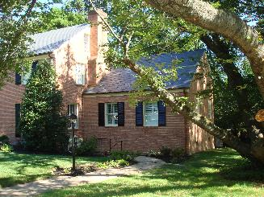

Quality, Creativity, Value.
Home
Residential
Commercial
Before and After
Recent Projects
Contact
Recent Projects
Here is a small sampling... for more photos, see:
Residential

Chevy Chase Master Bedroom Suite Addition